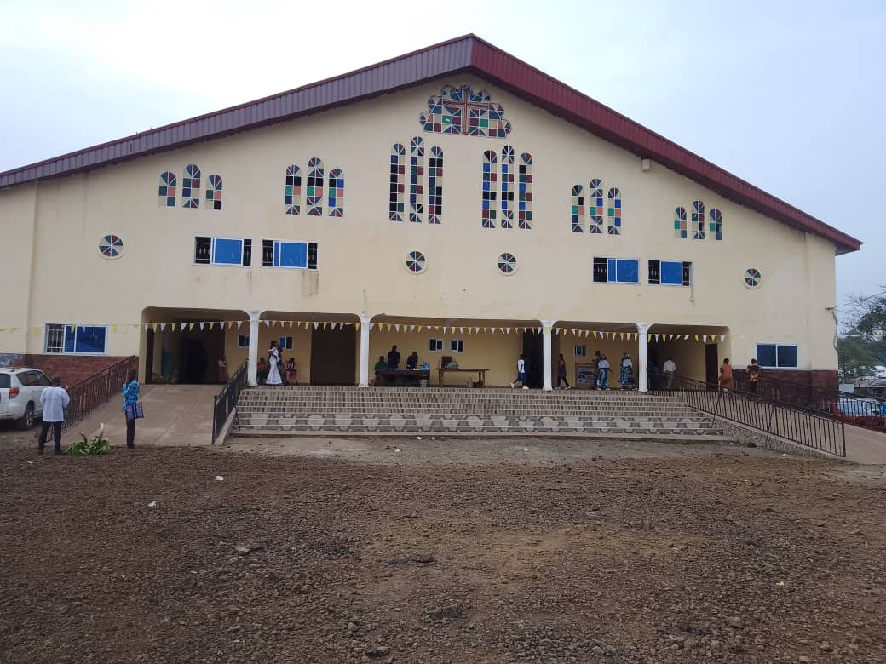

Welcome home to Holy Ground.
St. John of God Parish is a family of faith in Limbe — gathering to worship, to serve the sick, and to walk together through the whole of the Church's year. There's a place for you here.

Our Lady of the Snows
Dedication of St Mary Major — a memorial of the Blessed Virgin Mary.

The doors are open. Come and stand a while.
Beyond the news and the schedule, there is the quiet of the sanctuary — Adoration, Confession, and the daily Mass, kept faithfully in step with the Church's year.
Adoration & Confession Times“Labour without stopping; do all the good you can while you still have the time.”
St. John of God · Patron of the SickGrow in your faith
Nourish your soul each day through Scripture and the teaching of the Church.
Immerse yourself in the Holy Bible
Make a habit of reading the Scriptures daily. God speaks to us through His Word — strengthening, guiding, and consoling us in every circumstance.
Read the Bible online →Deepen your faith with the Catechism
The Catechism presents the faith clearly and completely. Regular reading helps you understand what the Church believes and teaches.
Read the Catechism online →